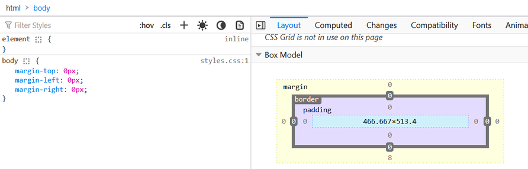

Cascading Style Sheets is a style language that is used to modify the look of a markup language. This language only modifies the look of an existing file. All browsers have their own default CSS which we can change through our custom CSS. In CSS, everything on a webpage is made of boxes that we can change, arrange, and style.
Before CSS, using HTML elements and attributes can be difficult as lots of code needs to be written to write something simple and making coding errors or spelling mistakes can be easy.
We use inline CSS to write css into an element using the style attribute. This can be done to do things such as change a color or a font size.
We use a style tag to change the background and the font.
What if we wanted to change every element on the page? We would have to change all of the elements on the page to contain the same style attribute... There is an easier way (internal css)!
We use internal CSS when we want to change the way that every element (of the same type) looks on a page. This is done so that we don't need to change every single element individually when we want to update a page's appearance.
We use external CSS when you want a style to be applied across the entirety of the website without wanting to copy internal CSS element to every affected page.
In short, the external css will modify the appearance of any page that links to it.
If we specify a CSS rule in two places, which one is applied?
When writing CSS, more specific code overwrites the more general code. If you write a global rule, and then inline CSS, priority is given to inline CSS. With this in mind, you can apply specific changes to the code by writing inline CSS.
Least Specific -> styles.css (External CSS)
More Specific -> style element in the head element (Internal CSS)
Most Specific -> element style="" (Inline CSS)
TIP! It is recommended that you apply all styles in your external CSS (styles.css) file.
Least Specific
Position -> If there are two of the same rules, but their values are different, the value that is lower down on the list is applied
Specificity -> Refers to how specific the rules are. Elements -> Classes -> Attributes -> IDs
Type -> styles.css -> internal css -> inline css
Keywork !important -> Adding the !important keyword to a rule after the value will ensure that this is applied.
Most Specific
When code has errors such as logic issues or spelling mistakes, debugging is important!
To debug, you should first try to identify a problem. For example, if you have inserted a CSS file but do not see any CSS, check the link for the css file. If there is an issue where parts of the css page is working but other elements are not, you can try checking for things such as a spelling error or for inline css.
You can use the browser's built in developer tools to try to find issues. Chrome developer tools can be used to find missing files when running an HTML page. Developer tools can also tell us what types of styles are currently running on a page as well.
TIP! To ensure that CSS is working on the current page, make a dramatic change to part of the site's content, such as changing the background-color property, to check.
Syntax is the grammer of a programming language, and CSS syntax is no different.
selector {property:value;}
The best practice for css is to put each changed property in alphabetical order. EX -> p{background-color:orange; color:green; font-family:roboto;}
All CSS Statements must end with a semicolon(;) at the end of the statement.
If you mispell the selector or the properties, the CSS might not work correctly.
Each element can only have ONE(1) ID. They can have multiple (MORE THAN ONE) classes, though!
The hierarchy for specificity is (least specific) element -> class -> (most specific) ID
There are different ways that selectors can be targeted.
selector{rule}
p[draggable]{color} changes all p elements that have the draggable attribute to the color. You can also select the value of the attribute. If < p draggable="true"> and < p draggable="false"> then if your css contains p[draggable="true"]{color}, only the p draggable that is true will change color.
selector1 selector2{rule}
parentselector > childselector {rule}
selectorselector{rules} | element.class#id{rule}| element#id{rule}
selector selectorselector{rule}
h1, h2{property:value;}
Classes can have different states. On occasion, if one would want to hover over the elements on a page, they can change the values.
For example, if a user were to hover over an image, the background color of the image may change.
img:hover{property:value}
Colors
Fonts
Borders
DIVS are a special HTML element that doesn't do anything without CSS. Using a DIV element can allow for an HTML document to be sectioned out and stylized. In general, each element is in their own box, but placing elements inside a DIV can put them into organized boxes that can be moved, stylized, and arranged.
EX-> You want to have a certain part of a webpage to have a background and border, and the font inside to be impact. This can be done like so:
A DIV will take on the height and width of the contents.
You can also specify...
The CSS Box Model can be found in a browser's inspector.
Using a CSS Box Model in the inspector will allow for someone to view and make visible adjustments and changes to the website that will not be committed to the code. Changes made here needs to be copied into the CSS to make these changes permanent.
The default browser CSS can also be viewed using the CSS Box Model
You can also add in custom rules here for the elements and see how it will affect the page in itself.
Can be used to select just one part of a text to format or modify it with CSS.
Used in conjunction with CSS
Is an Inline Display Element, only taking up as much height and width as it needs to.
This specifies the display of the element.
Display does not work unless the position property is set.
Even without css, there are predefined rules. Content is everything. Order of elements is based on how its written in the code. Children are inside of their parents. Child objects are on top of their parents on dispaly.
We can set css property position to position things the way that we would like to.
Centering elements using CSS.
we can make an image float to the left and have text to be the right. If we float on the image element, then the text can be on the left. If you want space between image and the text, you can add a margin right ot the image.
Can be used a lot, but should only be used for cases of wrapping the text around an element.
clear can be used to to prevent something from wrapping on the left. This can be thought of the opposite of float.
This should only be used for wrapping text around another element, and is not a free for all positioning element.
Font-family: can change all the fonts on the wbsite. monospace for coding because it makes everything easy to read.
Cursive and fantasy and low readablity and not oftem used.
serif is by default. Times and arial are defaults.
We can add specific fonts to our css. font-family: verdana, sans-serif. The font defaults to verdana, but if the system doesnt have it, sans serif is done.
Web-safe fonts. There are font familties that most sites can render safetly. no font is 100% websafe.
If we want to use a font but are unsure if everyone has it, we can use fallbacks.
What if we want everyone to see the exact same thing that we intended? If you want everyone to use the same font, we can use font embedding.
Google Fonts can be used to embed a font onto a website. These are fonts that can be commercial. search and add fonts to your desire. Then after finding them, you can add them to your head element, as a link. Then, ensure that the font name is inside of your css code file.when using css for margins, use pixels.
when doing css margins, it goes top, right, bottom, left. So, you can use
Change font color. Inside the element tag,,,
color:#hexcode
font weight is font-weight. This can be specified using keyword or by numbers
line height is line-height. can be specified with number. The perfered way is the single value without a unit.
This is how the layout should change depending on the size of a screen. This might be a different view for a mobile site VS a desktop site VS a tablet site.
Done through a few different methods
Used to display a different version of chosen elements when the screen is a certain width.
@media (breakpoint){rules}
You can also target two different sizes using the AND keyword.
Example of use
h1{font-size:30px;}
@media (max-width:600px){
/*Used for sites that are <600px wide*/
h1{font-size:20px;}
}
For example, if we define a div that has a height and a width, then later define @media(breakpoint){div{new height and width}}, the div will change when the breakpoint conditions are met
1 fr is a fraction of the screen.
can create a complex layout very quickly, and can specify specific classes to certain parts of the layout.
Good at displaying information on a horizontal or a vertical line.
Uses display:flex, and divides up the width depending on the flex: value. This divides height up by ratios.
Divides the space up to 12 columns.
Video Topics
CSS Comments
Comments are written in CSS using a /**/ format.
/*comment goes here.*/
Comments can be used to organize code, and explain what certain parts of the CSS should do.